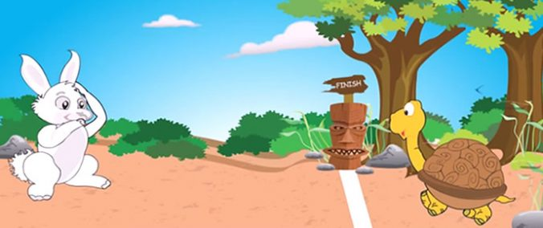

The rabbit and the tortoise
>3.The Rabbit and the Tortoise One day a rabbit was boasting about how fast he could run. He was laughing at the turtle for being so slow. Much to the rabbit’s surprise, the turtle challenged him to a race. The rabbit thought this was a good joke and accepted the challenge. The fox was to be the umpire of the race. As the race began, the rabbit raced way ahead of the turtle, just like everyone thought.The rabbit got to the halfway point and could not see the turtle anywhere. He was hot and tired and decided to stop and take a short nap. Even if the turtle passed him, he would be able to race to the finish line ahead of him. All this time the turtle kept walking step by step by step. He never quit no matter how hot or tired he got. He just kept going. However, the rabbit slept longer than he had thought and woke up. He could not see the turtle anywhere! He went at full speed to the finish line but found the turtle there waiting for him.
Moral of the story:never underestimate the weakest opponent.